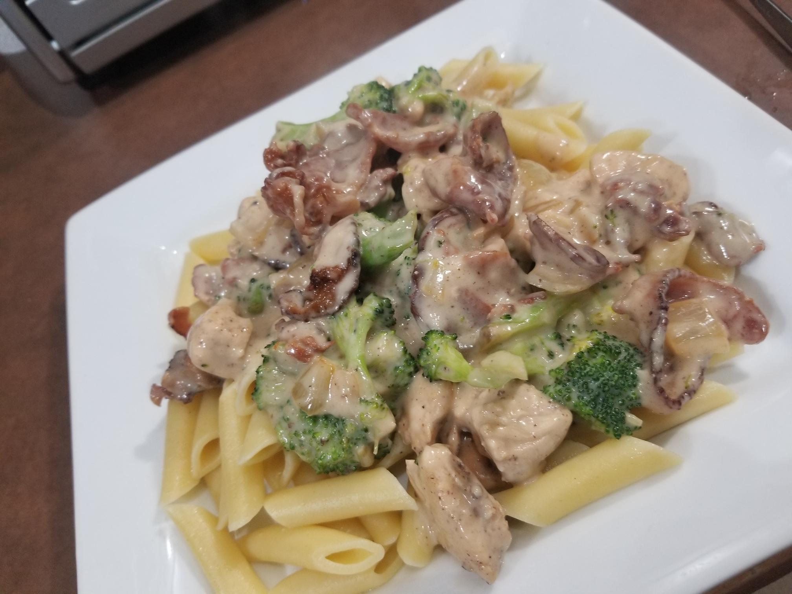

Chicken Alferdo Pasta

Description
This delicious pasta is a delightfully easy weeknight meal,
ready in 20 minutes and very little prep work
You can use any pasta you like, we just use the boxed penne.
This recipe also uses a jar of premade alfredo because nobody
has time for 'made from scratch sauce' on a busy week night.
Ingredients
- 2 Chicken breasts cubed
- 1 lb bacon ends
- 1 Onion diced
- 2 tsp Pepper
- 3 Garlic cloves
- 2 cups chopped Broccoli
- 2 TBSP Cajun seasoning
- Salt to taste
- Jar of your favorite Alfredo sauce
Steps
- Cook pasta according to directions
- Cook the bacon ends until slighty crispy, drain (reserve 2 TBSP of bacon grease)
and set bacon aside
- Cook chicken in reserved bacon grease
- Add onion and saute for 2 minutes
- Add garlic and broccoli, cook for additional 3 minutes
- Add salt, pepper and cajun seasoning
- Add Alfredo sauce, you can add a few TBSP of milk if your sauce is too thick
- Put over pasta and top with Parm cheese. Enjoy!